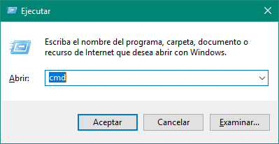
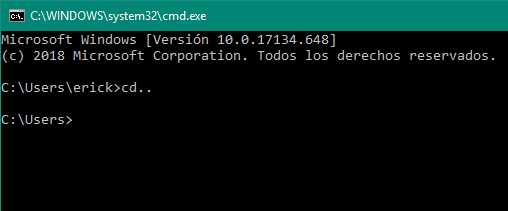
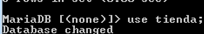

Pasos para abrir MySQL
Paso 1
Para abir la consola de comandos debemos de presionar las siguientes teclas ''Win+R'', donde se nos abrirá una venta y sobre ella teclearemos las siguientes letras ''cmd'' y a continuación daremos en aceptar.
Paso 2:
Una vez adentro nos abrirá una ventana, la cuál será la ventana de comandos sobre la cuál ejecutaremos mysql, pero nos abrirá por defecto con una ruta especifica la cuál no necesitaremmos por el momento y para salir de ahí tendremos que escribir el siguiente comando:
• cd..\
Paso 3:
En esta parte ya nos encontraremos dentro del disco local C en la carpeta, solo hace falta meternos a la ruta y ejecutar mysql, esto se hará con el siguiente comando: ''cd xampp\'' y daremos enter, después haremos lo mismo con los siguientes comandos:
• cd mysql\
• cd bin\
Paso 4:
Una vez hecho eso, tendremos que ejecutar mysql con el siguiente comando ''mysql.exe'', lo cual ejecutará mysql y ya estaremos listo para hacer uso de la misma.
Base de datos en CMD
Paso 1:
Ahora pasaremos a hacer unas ejecucioes, empezando con la creación de 2 bases de datos. En este caso vamos a crear la base de datos ''Escuela'' y ''Tienda'', con el siguiente comando:
• create database escuela;
• create database tienda;

Paso 2:
Para poder visualizar las base de datos existentes en mysql basta con introducir el siguiente comando:
• show databases;

Paso 3:
Ahora si queremos eliminar una base de datos simplemente ponemos la palabra ''drop database'' seguido del nombre de la base de datos que queremos eliminar, en este caso quedaría así:
• drop database tienda;

Paso 4:
Para trabajar sobreuna base de datos la debemos seleccionar mediante el comando ''use'', por lo que en este caso quedaría de la siguiente manera:
• use escuela;

Paso 5:
Para crear una tabla se debe de especificar sus tipos de datos que va a aceptar dentro de la tabla, para este ejemplo introducimos las siguieintes dos tablas con sus respectivos tipos de datos:
• create table grupos (id int primary key, grado int(1), grupo varchar(20));
• create table alumnos (id int primary key, nombre varchar(15), apellido varchar(15));

Paso 6:
Los tipos de datos para las bases de datos se clasifican en diferente tipos, entre los cuáles están:
• Texto corto: Sirve para poder hacer uso de datos alfanuméricos como nombres, título, etc.
• Texto largo: Grandes cantidades de datos alfanuméricos como oraciones y párrafos.
• Números: Sirve para poder emplear datos numéricos como 1,2,3,4, etc.
• Si/No: Datos booleanos (verdadero/falso)
Paso 7:
Si queremos consultar las tablas que conforman nuestra base de datos, sólo tenemos que introdur el siguiente código:
•show tables;

Paso 8:
Para eliminar una tabla dentro de una base de datos, sólo tenemos que introducir el siguiente comando ''drop table nomtabla'', donde nomtabla lo sustituimos por el nombre de la tabla que deseamos eliminar, por ejemplo:
• drop table alumnos;
Paso 9:
Para insertar información dentro de una tabla tenemos que seguir un orden, el cual depende de los tipos de datos que pusimos al crear la tabla, en este caso un ejemplo sería el siguiente:
• insert into grupos (id, grado, grupo) values (1, 6, "b");

Paso 10:
Para ver la información contenida dentro de una tabla en una base de datos basta con introducir el siguiente comando:
• select * from grupos;

Paso 11:
Para borrar un registro de datos en una tabla se introduce el siguiente código "delete from nomtabla where id=n", donde nomtabla es el nombre la tabla donde se encuentra el registro y n representa su número correspondiente, por ejemplo:
•delete from grupos where "id=5";

Tienda informática en MySQL
Paso 1:
Para empezar vamos a crear la base de datos que vamos a utlizar, en este caso de la tienda.
• create database tienda;
Paso 2:
Ahora vamos a ver la base de datos que creamos mediante el siguiente código:
• show databases;
Paso 3:
Ahora habilitamos la base de datos para poder usarla mediante el sigugiente código:
• use tienda;
Paso 4:
Para crear una tabla en nuestra base de datos utilizaremos el siguiente código:
• create table fabricantes(clave_fabricante int not null, nombre varchar(30), primary key (clave_fabricante));

Paso 5:
Ahora pasamos a crear una 2da tabla como se muestra a continuación:
•create table articulos (clave_articulo int not null, nombre varchar(30), precio int, clave_fabricante int, primary key (clave_articulo), foreign key (clave_fabricante) references fabricantes (clave_fabricante));
Paso 6:
Ahora vamos a visualizar las tablas que contiene nuestra base de datos mediante el siguiente código:
• show tables;
Paso 7:
Para mostrar los atributos de la tabla Artiulos, utilizamos el siguiente código:
• describe articulos;

Paso 8:
Ahora vamos a insertar registros de información dentro de la tabla mediante el siguiente código:
• insert into fabricantes values (1, 'Kingston');

Paso 9:
Ahora insertaremos registro de igual forma pero en la tabla Articulos.
• insert into articulos values (1, 'Teclado', 100, 3);
Paso 10:
Para obtener todos los datos de los productos de la tienda utilizamos el siguiente código;
• select * from articulos;

Paso 11:
Ahora para obneter los nombres de los productos de la tienda se utiliza el siguiente código:
• select nombre from articulos;

Paso 12:
Si queremos ver los nombres y precios de los productos, utilizamos el siguiente código:
• select nombre, precio from articulos;

Paso 13:
Ahora para obtener los nombres de los articulos sin repeticiones utilizamos el siguiente código:
• select distinct nombre from articulos;

Paso 14:
Para obtener los datos del artículo cuya clave de producto ez '5' utilizamos el siguiente código:
• select * from articulos where clave_articulo=5;

Paso 15:
Ahora obtenemos los datos del artículo cuyo nombre del producto es ''Teclado'':
• select * from articulos where nombre='teclado'

Paso 16:
Para obtener todos los datos de la Memoria RAM y memoria USB utilizamos el siguiente código:
• select * from articulos where nombre='memoria ram' or nombre='memoria usb';

Paso 17:
Para obtener todos los datos de los artículos que empiezan con 'M' utilizamos el siguiente código:
• select * from articulos where nombre like 'm%';

Paso 18:
Para obtener el nombre de los productos donde el precio sea $100 utilizamos el siguiente código:
• select nombre from articulos where precio = 100;

Paso 19:
Con el siguiente comando seleccionaremos el nombre de los productos donde el precio sea mayor a $200:
• select nombre from articulos where precio > 200;

Paso 20:
Con el siguiente comando obtendremos todos los datos de los artículos cuyo precio este entre $100 y $200 con el operador AND:
• select * from articulos where precio >=100 and precio <=350;

Paso 21:
Con el siguiente comando obtendremos todos los datos de los artículos cuyo precio este entre $100 y $200 con el operador BETWEEN:
• select * from articulos where precio between 100 and 350;

Paso 22:
Para obtener el precio medio de todos los productos utilizamos el siguiente comando:
•select avg(precio) from articulos;
Paso 23:
Con el siguiente comando obtenemos el precio medio de los artículos cuyo código de fabricante sea 2:
• select avg(precio) from articulos where clave_fabricante=3;

Paso 24:
Para obtener el nombre y precio de los artículos ordenados por nombre utilizaremos el siguiente código:
• select nombre, precio from articulos order by nombre;

Paso 25:
Para obtener todos los datos de los productos ordenados descendentemente por Precio utilizamos el siguiente comando:
• select * from articulos order by precio desc;

Paso 26:
Para obtener el nombre y precio de los artículos cuyo precio sea mayor a 250 y ordenarlos descendentemente por precio y luego ascendentemente por nombre utilizamos el siguiente comando:
• select nombre, precio from articulos where precio >= 250 order by precio desc, nombre;

Paso 27:
Para obtener un listado completo de los productos, incluyendo por cada artículo los datos del articulo y del fabricante utilizamos el siguiente comando:
• select * from articulos, fabricantes where articulos.clave_fabricante = fabricantes.clave_fabricante;

Paso 28:
Para obtener la clave del producto, nombre del producto y nombre del fabricante de todos los productos en venta utilizamos el siguiente comando:
• select articulos.clave_articulo, articulos.nombre, fabricantes.nombre from articulos, fabricantes where articulos.clave_fabricante = fabricantes.clave_fabricante;

Paso 29:
Para obtener el nombre y precio de los artículos donde el fabricante sea Logitech ordenados alfabéticamente por nombre del producto utilizamos el siguiente comando:
• select articulos.nombre, articulos.precio from articulos, fabricantes where fabricantes.nombre='logitech' and articulos.clave_fabricante = fabricantes.clave_fabricante order by articulos.nombre;

Paso 30:
Para obtener el nombre, precio y nombre de fabricante de los productos que son marca Lexar o Kingston ordenados descendentemente por precio utilizamos el siguiente comando:
•select articulos.nombre, articulos.precio, fabricantes.nombre from articulos, fabricantes where fabricantes.nombre='lexar' or fabricantes.nombre='kingston' and articulos.clave_faricante = fabricantes.clave_fabricante order by articulos.precio desc;

Paso 31:
Para añadir un nuevo producto con clave de producto 11,Altavoces de $120 del fabricante 2 utilizamos el siguiente comando:
• insert into articulos values(11, 'Altavoces', 120, 2);

Paso 32:
Para cambiar el nombre del producto 6 a 'Impresora Laser' utilizamos el siguiente comando:
•update articulos set nombre='Impresora laser' where clave_articulo=8;

Paso 33:
Si queremos aplicar un descuento del 10% a todos los productos utilizamos el siguiente comando:
• update articulos set precio=precio *0.10;

Paso 34:
Si queremos aplicar un descuento de $10 a todos los productos cuyo precio sea mayor o igual a $300 utilizamos el siguiente comando:
• update articulos set precio=precio - 10 where precio >= 300;

Paso 35:
Finalmente para borrar el producto número 6 utilizaremos el siguiente comando:
• delete from articulos where clave_articulo = 6;